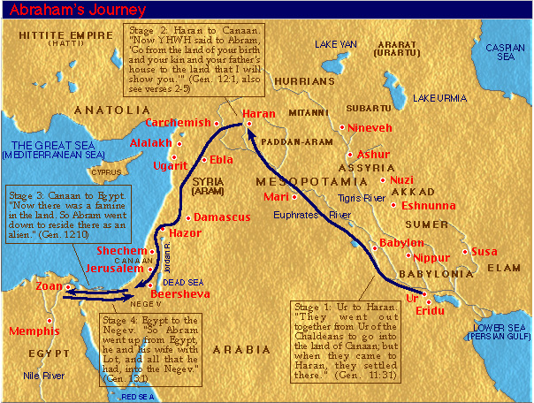

God calls Abram (75 years old) to leave ALL of his family and GO to a land he will show him. But (in fear?) Abram disobey's and takes his nephew Lot. When a famine strikes Abram heads to Egypt (in fear?) and offers his wife to pharoah to save his own life (in fear!)
1 Now the LORD (YHWH – He is) said to Abram (Avram – Exalted Father), “Go from your land, and from your relatives, and from your father’s house, to the land that I will show you.
2 And I will make you into a great nation, and I will bless you, and I will make your name great. And you will be a blessing.
3 I will bless those who bless you, and the one who curses you I will curse. And in you all the families of the earth will be blessed.”
4 So Abram went, as the LORD had spoken to him, and Lot (Lot – Covering) went with him. Abram was seventy-five years old when he left Haran (Charan – Parched).
5 Abram took Sarai (Sarai – My Princess) his wife, and Lot his brother’s son, and all their possessions that they had accumulated, and the people they had acquired in Haran, and they set out for the land of Canaan (Kena‘an – Lowland). They came to the land of Canaan.
6 Abram passed through the land as far as the site of Shechem (Shekhem – Shoulder), to the oak of Moreh (Moreh – Teacher). At that time the Canaanites (Kena‘anim – Lowlanders) were in the land.
7 Then the LORD appeared to Abram and said, “To your offspring I will give this land.” So he built there an altar to the LORD, who had appeared to him.
8 From there he moved on to the mountain east of Bethel (Beit-El – House of God) and pitched his tent, with Bethel on the west and Ai (Ai – Ruin) on the east. There he built an altar to the LORD and called on the name of the LORD.
9 Then Abram set out and continued toward the Negev (Negev – South, Dry Land).
10 Now there was a famine in the land, and Abram went down to Egypt (Mitzrayim – Double Distress) to live there temporarily, for the famine was severe in the land.
11 As he was about to enter Egypt, he said to Sarai his wife, “Look, I know that you are a beautiful woman to look at.
12 So when the Egyptians see you, they will say, ‘This is his wife.’ Then they will kill me but let you live.
13 Please say you are my sister, so that it may go well with me for your sake, and my life will be spared because of you.”
14 When Abram entered Egypt, the Egyptians saw that the woman was very beautiful.
15 Pharaoh’s (Par‘oh – Great House) officials saw her and praised her to Pharaoh, and the woman was taken into Pharaoh’s house.
16 And he treated Abram well for her sake, and he acquired sheep, cattle, male and female donkeys, male and female servants, and camels.
17 But the LORD struck Pharaoh and his household with great plagues because of Sarai, Abram’s wife.
18 So Pharaoh summoned Abram and said, “What is this you have done to me? Why did you not tell me she was your wife?
19 Why did you say, ‘She is my sister,’ so that I took her to be my wife? Now then, here is your wife. Take her and go.”
20 So Pharaoh gave orders concerning him to his men, and they sent him away with his wife and all that he had.